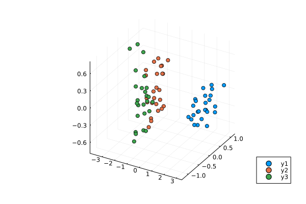

Multidimensional Scaling
In general, Multidimensional Scaling (MDS) refers to techniques that transforms samples into lower dimensional space while preserving the inter-sample distances as well as possible.
Example
Performing MDS on Iris data set:
using MultivariateStats, RDatasets, Plots
# load iris dataset
iris = dataset("datasets", "iris")
# take half of the dataset
X = Matrix(iris[1:2:end,1:4])'
X_labels = Vector(iris[1:2:end,5])Suppose X is our data matrix, with each observation in a column. We train a MDS model, allowing up to 3 dimensions:
M = fit(MDS, X; maxoutdim=3, distances=false)Classical MDS(indim = 4, outdim = 3)Then, apply MDS model to get an embedding of our data in 3D space:
Y = predict(M)3×75 Matrix{Float64}:
2.71359 2.90321 2.75875 … -2.39001 -1.51972 -1.87717
0.238246 -0.233575 0.228345 0.333917 -0.297498 0.0985705
0.0140596 0.0221454 -0.104549 -0.520729 0.181055 -0.717537Now, we group results by testing set labels for color coding and visualize first 3 principal components in 3D interactive plot
setosa = Y[:,X_labels.=="setosa"]
versicolor = Y[:,X_labels.=="versicolor"]
virginica = Y[:,X_labels.=="virginica"]
p = scatter(setosa[1,:],setosa[2,:],setosa[3,:],marker=:circle,linewidth=0)
scatter!(versicolor[1,:],versicolor[2,:],versicolor[3,:],marker=:circle,linewidth=0)
scatter!(virginica[1,:],virginica[2,:],virginica[3,:],marker=:circle,linewidth=0)
Classical Multidimensional Scaling
This package defines a MDS type to represent a classical MDS model[1], and provides a set of methods to access the properties.
MultivariateStats.MDS — Type
Classical Multidimensional Scaling (MDS), also known as Principal Coordinates Analysis (PCoA), is a specific technique in this family that accomplishes the embedding in two steps:
- Convert the distance matrix to a Gram matrix. This conversion is based on
the following relations between a distance matrix $D$ and a Gram matrix $G$:
\[\mathrm{sqr}(\mathbf{D}) = \mathbf{g} \mathbf{1}^T + \mathbf{1} \mathbf{g}^T - 2 \mathbf{G}\]
Here, $\mathrm{sqr}(\mathbf{D})$ indicates the element-wise square of $\mathbf{D}$, and $\mathbf{g}$ is the diagonal elements of $\mathbf{G}$. This relation is itself based on the following decomposition of squared Euclidean distance:
\[\| \mathbf{x} - \mathbf{y} \|^2 = \| \mathbf{x} \|^2 + \| \mathbf{y} \|^2 - 2 \mathbf{x}^T \mathbf{y}\]
- Perform eigenvalue decomposition of the Gram matrix to derive the coordinates.
Note: The Gramian derived from $D$ may have non-positive or degenerate eigenvalues. The subspace of non-positive eigenvalues is projected out of the MDS solution so that the strain function is minimized in a least-squares sense. If the smallest remaining eigenvalue that is used for the MDS is degenerate, then the solution is not unique, as any linear combination of degenerate eigenvectors will also yield a MDS solution with the same strain value.
The MDS method type comes with several methods where $M$ be an instance of MDS, $d$ be the dimension of observations, and $p$ be the output dimension, i.e. the embedding dimension, and $n$ is the number of the observations.
StatsAPI.fit — Method
fit(MDS, X; kwargs...)Compute an embedding of X points by classical multidimensional scaling (MDS). There are two calling options, specified via the required keyword argument distances:
mds = fit(MDS, X; distances=false, maxoutdim=size(X,1)-1)where X is the data matrix. Distances between pairs of columns of X are computed using the Euclidean norm. This is equivalent to performing PCA on X.
mds = fit(MDS, D; distances=true, maxoutdim=size(D,1)-1)where D is a symmetric matrix D of distances between points.
StatsAPI.predict — Method
predict(M)Returns a coordinate matrix of size $(p, n)$ for the MDS model M, where each column is the coordinates for an observation in the embedding space.
StatsAPI.predict — Method
predict(M, x::AbstractVector)Calculate the out-of-sample transformation of the observation x for the MDS model M. Here, x is a vector of length d.
MultivariateStats.projection — Method
projection(M::MDS)Get the MDS model M eigenvectors matrix (of size $(n, p)$) of the embedding space. The eigenvectors are arranged in descending order of the corresponding eigenvalues.
MultivariateStats.loadings — Method
loadings(M::MDS)Get the loading of the MDS model M.
LinearAlgebra.eigvals — Method
eigvals(M::MDS)Get the eigenvalues of the MDS model M.
LinearAlgebra.eigvecs — Method
eigvecs(M::MDS)Get the MDS model M eigenvectors matrix.
MultivariateStats.stress — Function
stress(M::MDS)Get the stress of the MDS mode M.
stress(M::MetricMDS)Get the stress of the MDS model M.
This package provides following functions related to classical MDS.
MultivariateStats.gram2dmat — Function
gram2dmat(G)Convert a Gram matrix G to a distance matrix.
MultivariateStats.gram2dmat! — Function
gram2dmat!(D, G)Convert a Gram matrix G to a distance matrix, and write the results to D.
MultivariateStats.dmat2gram — Function
dmat2gram(D)Convert a distance matrix D to a Gram matrix.
MultivariateStats.dmat2gram! — Function
dmat2gram!(G, D)Convert a distance matrix D to a Gram matrix, and write the results to G.
Metric Multidimensional Scaling
This package defines a MetricMDS type to represent a (non)metric MDS model[1], and provides a set of methods to access the properties.
MultivariateStats.MetricMDS — Type
(Non)Metric Multidimensional Scaling
Use this class to perform (non)metric multidimensional scaling.
There are two calling options, specified via the required keyword argument distances:
mds = fit(MDS, X; distances=false, maxoutdim=size(X,1)-1)where X is the data matrix. Distances between pairs of columns of X are computed using the Euclidean norm. This is equivalent to performing PCA on X.
mds = fit(MDS, D; distances=true, maxoutdim=size(D,1)-1)where D is a symmetric matrix D of distances between points.
In addition, the metric parameter specifies type of MDS, By default, it is assigned with nothing value which results in performing metric MDS with dissimilarities calculated as Euclidean distances.
An arbitrary transformation function can be provided to metric parameter to perform metric MDS with transformed proximities. The function has to accept two parameters, a vector of proximities and a vector of distances, corresponding to the proximities, to calculate disparities required for stress calculation. Internally, the proximity and distance vectors are obtained from compact triangular matrix representation of proximity and distance matrices.
For ratio MDS, a following ratio transformation function can be used
mds = fit(MDS, D; distances=true, metric=((p,d)->2 .* p))For order MDS, use isotonic regression function in the metric parameter:
mds = fit(MDS, D; distances=true, metric=isotonic)The metric MDS type comes with several methods where $M$ be an instance of MetricMDS, $d$ be the dimension of observations, and $p$ be the output dimension, i.e. the embedding dimension, and $n$ is the number of the observations.
StatsAPI.fit — Method
fit(MetricMDS, X; kwargs...)Compute an embedding of X points by (non)metric multidimensional scaling (MDS).
Keyword arguments:
Let (d, n) = size(X) be respectively the input dimension and the number of observations:
distances: The choice of input (required):false: useXto calculate dissimilarity matrix using Euclidean distancetrue: useXinput as precomputed dissimilarity symmetric matrix (distances)
maxoutdim: Maximum output dimension (defaultd-1)metric: a function for calculation of disparity valuesnothing: use dissimilarity values as the disparities to perform the metric MDS (default)isotonic: converts dissimilarity values to ordinal disparities to perform non-metric MDS- any two parameter disparity transformation function, where the first parameter is a vector of proximities (i.e. dissimilarities) and the second parameter is a vector of distances, e.g.
(p,d)->b*pfor somebis a transformation function for ratio MDS.
tol: Convergence tolerance (default1.0e-3)maxiter: Maximum number of iterations (default300)initial: an initial reduced space point configurationnothing: then an initial configuration is randomly generated (default)- pre-defined matrix
weights: a weight matrixnothing: then weights are set to one, $w_{ij} = 1$ (default)- pre-defined matrix
Note: if the algorithm is unable to converge then ConvergenceException is thrown.
StatsAPI.predict — Method
predict(M::MetricMDS)Returns a coordinate matrix of size $(p, n)$ for the MDS model M, where each column is the coordinates for an observation in the embedding space.
MultivariateStats.stress — Method
stress(M::MetricMDS)Get the stress of the MDS model M.
References
- 1Ingwer Borg and Patrick J. F. Groenen, "Modern Multidimensional Scaling: Theory and Applications", Springer, pp. 201–268, 2005.